<!--
  This template loads for the 'tab.friend-detail' state (app.js)
  'friend' is a $scope variable created in the FriendsCtrl controller (controllers.js)
  The FriendsCtrl pulls data from the Friends service (service.js)
  The Friends service returns an array of friend data
-->
<ion-view view-title="Registro">
  <ion-nav-bar class="view-navigation">
    <ion-nav-back-button>
    </ion-nav-back-button>
  </ion-nav-bar>
  <ion-content class="padding" style="background: #11c1f3;">
    <div class="list">
      <figure class="Login__imgContainer">
        
      </figure>

      <label class="item item-input">
        <span class="input-label">Nombre</span>
        <input class="Login__input" type="text" placeholder="Nombre">
      </label>

      <label class="item item-input">
        <span class="input-label">Apellidos</span>
        <input class="Login__input" type="text" placeholder="Apellidos">
      </label>

      <label class="item item-input">
        <span class="input-label">Username</span>
        <input class="Login__input" type="text" placeholder="Username">
      </label>

      <label class="item item-input">
        <span class="input-label">Contraseña</span>
        <input class="Login__input" type="password" placeholder="Contraseña">
      </label>
    </div>


    <button class="button button-block button-balanced" >
      Registro
    </button>

  </ion-content>
</ion-view>
